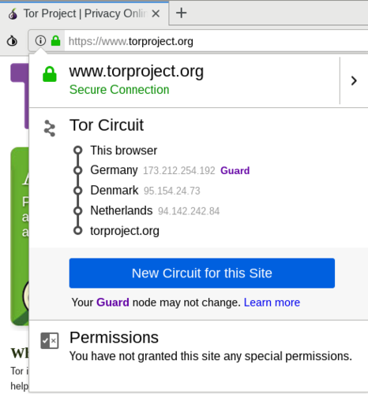

7 minute read
Intro to Tor
Required expertise level : Beginner / Intermediate
Platform : Gnu/Linux | macOS | MS Windows | Android | BSD
Last tested and confirmed : March 2022
This guide is an updated version of this article, published by MadaMasr - An Egyptian independent media organization - in the context of releasing their own Onion mirror.
What is Tor?
Tor
is the acronym for the original project that produced The Onion Router protocol, which protects the identity of internet users. It’s one of several technologies that have become widely used to roam the web freely and securely.The project began in the mid-1990s and has gone through several phases. It is now administered by a not-for-profit organization, supervised by a community of its users and developers.
All Tor software is developed under open-source licenses and is publicly available for anyone to view and collaborate in improving.
How does Tor work?
Let’s imagine the journey of a data packet between a user and a server (i.e. a website), both connected to the internet. With a regular connection, the data packet moves from the user’s device through the local router and then to the servers of the Internet Server Provider (ISP). If the ISP’s servers allow the packet to pass, it will reach its destination, hassle-free.
But what if you don’t want anyone to access your data packet, its destination or its content? Or to be able to block its journey?
Onion routing
allows your packet to take a different, more secure route to reach its final destination.
Your Tor client will choose a group of random nodes for the packet to move through until it reaches its final destination. It will then generate a set of keys on your computer, which are used to encrypt the data packet as many times as the number of nodes it will pass through in its journey before reaching the final exit node.

The encryption protocol allows each node the packet is passing through to decrypt just one layer of the encryption to get information about the next node the packet will pass through.
The aim of the onion routing protocol is for your packet to pass through a series of random nodes before reaching its final destination, with each node only receiving information about the nodes that directly proceed and follow it.
None of the nodes — except for the last one — can access information about the data packet’s final destination or see what’s inside it. The final exit node decrypts the final layer and directs the packet to its intended destination on the internet.
Who runs Tor?
The organization
operates several machines that serve as nodes on its network. Volunteers run thousands more nodes — all under the community’s supervision — to ensure data security.Anyone can volunteer to host a node in the network given that they have the necessary technical capabilities and internet speed.
Neither the community nor the organization has the right or the ability to interfere with the encryption protocol because the encryption keys of each user are stored on their respective devices.
What’s the difference between using Tor and using a Virtual Private Network (VPN)?
VPN is the name given to different protocols and mechanisms that route the connection of one or more machines to a virtual network through which they can access the internet.
To do so, the VPN client creates an encrypted connection to the server of the virtual private network, which acts like a tunnel transferring data from the machine to the server before it reaches the internet. When the data gets to its final destination, it appears as if it were sent from the server of the virtual network.
VPN theoretically helps protect users’ anonymity as it hides their geographical locations and identities from the servers at the receiving end. Yet while VPN provides some privacy besides enabling users to access blocked websites, it doesn’t provide watertight protection.
Network admins can collect users’ data after decrypting them. Data can also be manipulated if users connect to websites and services that don’t use secure protocols, such as HTTPS.
It’s also not advisable to use free VPN services, as many such services make money by collecting and selling user data. Others inadvertently transfer adware and, sometimes, malware from unprotected websites while browsing.
These are the main differences between using the Tor network and VPN services. Whether paid or free, VPN providers generally seek profit, and there isn’t a practical method to verify their user data security policies. Tor, on the other hand, is subject to clear transparency rules and the supervision of both developers and users.
Additionally, it’s easy to block access to VPN service providers, either through tracking their respective routing protocols or intercepting connections. Authorities can also directly block VPN servers and websites, as is the case with some countries.
What’s the difference between Onion Services and the normal web - Clearnet?
We’ve explained how Tor network operates by describing the journey of a data packet through the nodes until it reaches the exit node and then its destination on the internet.
But what if the packet never leaves Tor network?
Onion services are used to grant access to servers operating completely within the Tor network that are only accessible using the onion routing protocol. These services can be accessed through randomly generated addresses (most of the time) ending with the special-use top-level domain suffix “.onion” (as opposed to the more common .com or .org).
What this technique provides is a routing protocol between the user and the server so that neither has any information about the other.
Tor Browser
-
Tor Project website If Internet censorship is in place in your country, there is a fairly chance this website is blocked
Other mirrors
-
We host an expermintal mirror for Tor Browser binary files on IPFS, you can reach it on ipfs.io/ipns/tor-ipfs.fightcensorship.tech
Tor Project also provides another method to download its browser. Just send an email to gettor@torproject.org including the name of your operating system (Windows, OSX, Linux). You will receive a message containing links to download the browser via Google Drive and Dropbox, which aren’t blocked.
Tor Browser for Android is also available on the Google Play Store

There isn’t an official version of Tor Browser for iPhone and iPad users because of the restrictions Apple places on apps. However, every now and then, independent developers come up with alternative browsers to access Tor network such as OnionBrowser.
These browsers, however, don’t ensure the anonymity of users accessing content outside the Tor network.
When Tor is blocked, activate bridges
What makes fully blocking Tor network such a difficult task is that there are many ways to connect to it. One such way is by using bridges.
In a nutshell, bridges are servers run by volunteers whose addresses aren’t usually published openly. Bridges work as an intermediary between users and Tor network and help bypass blocks while hiding the connection from any party trying to analyze the network’s data.
Activating Bridges
Tor browser on Android phones
Tor’s Android client, Orbot

Tor browser on Desktop devices